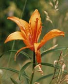

les Veis : chalet de Chézari (2080 m)

Département, commune : Savoie, commune de Bourg St Maurice
Cartes : AsF© 16 (case D6/7), IGN Top25 3531 ET pli K2
Situation : plan des Veis.
Propriétaire : Mme Chantal Juglaret, alpagiste au chalet Rullier
Gardien :-
Ouverture et gardiennage : ouverture aléatoire
Commodités : -
Accès : par piste 4x4 depuis le Pont de Chézari en 10 mn
Itinéraires à proximité : SR
Randonnées à partir du refuge :
guide ou site AsF© : Miravidi, col du Breuil, col des Ouillons, col de la Forclaz, lac des Rousses, Grandes Aiguilles
autres randonnées : -
La bergerie de Chézari a été aménagée, mais aujourd’hui le projet de gîte est malheureusement abandonné et l’utilisation très incertaine